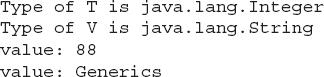
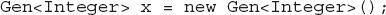

Chapter 13
Generics
Key Skills & Concepts
 Understand the benefits of generics
Understand the benefits of generics Create a generic class
Apply bounded type parameters
Use wildcard arguments
Apply bounded wildcards
Create a generic method
Create a generic constructor
Create a generic interface
Utilize raw types
Apply type inference with the diamond operator
Understand erasure
Avoid ambiguity errors
Know generics restrictions
Since its original 1.0 version, many new features have been added to Java. All have enhanced and expanded the scope of the language, but one that has had an especially profound and far-reaching impact is generics because its effects were felt throughout the entire Java language. For example, generics added a completely new syntax element and caused changes to many of the classes and methods in the core API. It is not an overstatement to say that the inclusion of generics fundamentally reshaped the character of Java.
The topic of generics is quite large, and some of it is sufficiently advanced to be beyond the scope of this book. However, a basic understanding of generics is necessary for all Java programmers. At first glance, the generics syntax may look a bit intimidating, but don’t worry. Generics are surprisingly simple to use. By the time you finish this chapter, you will have a grasp of the key concepts that underlie generics and sufficient knowledge to use generics effectively in your own programs.
Generics Fundamentals
At its core, the term generics means parameterized types. Parameterized types are important because they enable you to create classes, interfaces, and methods in which the type of data upon which they operate is specified as a parameter. A class, interface, or method that operates on a type parameter is called generic, as in generic class or generic method.
Ask the Expert
Q: I have heard that Java’s generics are similar to templates in C++. Is this the case?
A: Java generics are similar to templates in C++. What Java calls a parameterized type, C++ calls a template. However, Java generics and C++ templates are not the same, and there are some fundamental differences between the two approaches to generic types. For the most part, Java’s approach is simpler to use.
A word of warning: If you have a background in C++, it is important not to jump to conclusions about how generics work in Java. The two approaches to generic code differ in subtle but fundamental ways.
A principal advantage of generic code is that it will automatically work with the type of data passed to its type parameter. Many algorithms are logically the same no matter what type of data they are being applied to. For example, a Quicksort is the same whether it is sorting items of type Integer, String, Object, or Thread. With generics, you can define an algorithm once, independently of any specific type of data, and then apply that algorithm to a wide variety of data types without any additional effort.
It is important to understand that Java has always given you the ability to create generalized classes, interfaces, and methods by operating through references of type Object. Because Object is the superclass of all other classes, an Object reference can refer to any type of object. Thus, in pre-generics code, generalized classes, interfaces, and methods used Object references to operate on various types of data. The problem was that they could not do so with type safety because casts were needed to explicitly convert from Object to the actual type of data being operated upon. Thus, it was possible to accidentally create type mismatches. Generics add the type safety that was lacking because they make these casts automatic and implicit. In short, generics expand your ability to reuse code and let you do so safely and reliably.
A Simple Generics Example
Before discussing any more theory, it’s best to look at a simple generics example. The following program defines two classes. The first is the generic class Gen, and the second is GenDemo, which uses Gen.
The output produced by the program is shown here:
Let’s examine this program carefully. First, notice how Gen is declared by the following line:
Here, T is the name of a type parameter. This name is used as a placeholder for the actual type that will be passed to Gen when an object is created. Thus, T is used within Gen whenever the type parameter is needed. Notice that T is contained within < >. This syntax can be generalized. Whenever a type parameter is being declared, it is specified within angle brackets. Because Gen uses a type parameter, Gen is a generic class.
In the declaration of Gen, there is no special significance to the name T. Any valid identifier could have been used, but T is traditional. Furthermore, it is recommended that type parameter names be single-character, capital letters. Other commonly used type parameter names are V and E.
Next, T is used to declare an object called ob, as shown here:
As explained, T is a placeholder for the actual type that will be specified when a Gen object is created. Thus, ob will be an object of the type passed to T. For example, if type String is passed to T, then in that instance, ob will be of type String.
Now consider Gen’s constructor:
Notice that its parameter, o, is of type T. This means that the actual type of o is determined by the type passed to T when a Gen object is created. Also, because both the parameter o and the member variable ob are of type T, they will both be of the same actual type when a Gen object is created.
The type parameter T can also be used to specify the return type of method, as is the case with the getob( ) method, shown here:
Because ob is also of type T, its type is compatible with the return type specified by getob( ).
The showType( ) method displays the type of T. It does this by calling getName( ) on the Class object returned by the call to getClass( ) on ob. We haven’t used this feature before, so let’s examine it closely. As you should recall from Chapter 7, the Object class defines the method getClass( ). Thus, getClass( ) is a member of all class types. It returns a Class object that corresponds to the class type of the object on which it is called. Class is a class defined within java.lang that encapsulates information about a class. Class defines several methods that can be used to obtain information about a class at run time. Among these is the getName( ) method, which returns a string representation of the class name.
The GenDemo class demonstrates the generic Gen class. It first creates a version of Gen for integers, as shown here:
Look carefully at this declaration. First, notice that the type Integer is specified within the angle brackets after Gen. In this case, Integer is a type argument that is passed to Gen’s type parameter, T. This effectively creates a version of Gen in which all references to T are translated into references to Integer. Thus, for this declaration, ob is of type Integer, and the return type of getob( ) is of type Integer.
Before moving on, it’s necessary to state that the Java compiler does not actually create different versions of Gen, or of any other generic class. Although it’s helpful to think in these terms, it is not what actually happens. Instead, the compiler removes all generic type information, substituting the necessary casts, to make your code behave as if a specific version of Gen was created. Thus, there is really only one version of Gen that actually exists in your program. The process of removing generic type information is called erasure, which is discussed later in this chapter.
The next line assigns to iOb a reference to an instance of an Integer version of the Gen class.
Notice that when the Gen constructor is called, the type argument Integer is also specified. This is because the type of the object (in this case iOb) to which the reference is being assigned is of type Gen<Integer>. Thus, the reference returned by new must also be of type Gen<Integer>. If it isn’t, a compile-time error will result. For example, the following assignment will cause a compile-time error:
Because iOb is of type Gen<Integer>, it can’t be used to refer to an object of Gen<Double>. This type of checking is one of the main benefits of generics because it ensures type safety.
As the comments in the program state, the assignment
makes use of autoboxing to encapsulate the value 88, which is an int, into an Integer. This works because Gen<Integer> creates a constructor that takes an Integer argument. Because an Integer is expected, Java will automatically box 88 inside one. Of course, the assignment could also have been written explicitly, like this:
However, there would be no benefit to using this version.
The program then displays the type of ob within iOb, which is Integer. Next, the program obtains the value of ob by use of the following line:
Because the return type of getob( ) is T, which was replaced by Integer when iOb was declared, the return type of getob( ) is also Integer, which auto-unboxes into int when assigned to v (which is an int). Thus, there is no need to cast the return type of getob( ) to Integer.
Next, GenDemo declares an object of type Gen<String>:
Because the type argument is String, String is substituted for T inside Gen. This creates (conceptually) a String version of Gen, as the remaining lines in the program demonstrate.
Generics Work Only with Reference Types
When declaring an instance of a generic type, the type argument passed to the type parameter must be a reference type. You cannot use a primitive type, such as int or char. For example, with Gen, it is possible to pass any class type to T, but you cannot pass a primitive type to T. Therefore, the following declaration is illegal:
Of course, not being able to specify a primitive type is not a serious restriction because you can use the type wrappers (as the preceding example did) to encapsulate a primitive type. Further, Java’s autoboxing and auto-unboxing mechanism makes the use of the type wrapper transparent.
Generic Types Differ Based on Their Type Arguments
A key point to understand about generic types is that a reference of one specific version of a generic type is not type-compatible with another version of the same generic type. For example, assuming the program just shown, the following line of code is in error and will not compile:
Even though both iOb and strOb are of type Gen<T>, they are references to different types because their type arguments differ. This is part of the way that generics add type safety and prevent errors.
A Generic Class with Two Type Parameters
You can declare more than one type parameter in a generic type. To specify two or more type parameters, simply use a comma-separated list. For example, the following TwoGen class is a variation of the Gen class that has two type parameters:
The output from this program is shown here:

Notice how TwoGen is declared:
It specifies two type parameters, T and V, separated by a comma. Because it has two type parameters, two type arguments must be passed to TwoGen when an object is created, as shown next:
In this case, Integer is substituted for T, and String is substituted for V. Although the two type arguments differ in this example, it is possible for both types to be the same. For example, the following line of code is valid:
In this case, both T and V would be of type String. Of course, if the type arguments were always the same, then two type parameters would be unnecessary.
The General Form of a Generic Class
The generics syntax shown in the preceding examples can be generalized. Here is the syntax for declaring a generic class:
class class-name<type-param-list> { // …
Here is the full syntax for declaring a reference to a generic class and creating a generic instance:
class-name<type-arg-list> var-name =
new class-name<type-arg-list>(cons-arg-list);
Bounded Types
In the preceding examples, the type parameters could be replaced by any class type. This is fine for many purposes, but sometimes it is useful to limit the types that can be passed to a type parameter. For example, assume that you want to create a generic class that stores a numeric value and is capable of performing various mathematical functions, such as computing the reciprocal or obtaining the fractional component. Furthermore, you want to use the class to compute these quantities for any type of number, including integers, floats, and doubles. Thus, you want to specify the type of the numbers generically, using a type parameter. To create such a class, you might try something like this:
Unfortunately, NumericFns will not compile as written because both methods will generate compile-time errors. First, examine the reciprocal( ) method, which attempts to return the reciprocal of num. To do this, it must divide 1 by the value of num. The value of num is obtained by calling doubleValue( ), which obtains the double version of the numeric object stored in num. Because all numeric classes, such as Integer and Double, are subclasses of Number, and Number defines the doubleValue( ) method, this method is available to all numeric wrapper classes. The trouble is that the compiler has no way to know that you are intending to create NumericFns objects using only numeric types. Thus, when you try to compile NumericFns, an error is reported that indicates that the doubleValue( ) method is unknown. The same type of error occurs twice in fraction( ), which needs to call both doubleValue( ) and intValue( ). Both calls result in error messages stating that these methods are unknown. To solve this problem, you need some way to tell the compiler that you intend to pass only numeric types to T. Furthermore, you need some way to ensure that only numeric types are actually passed.
To handle such situations, Java provides bounded types. When specifying a type parameter, you can create an upper bound that declares the superclass from which all type arguments must be derived. This is accomplished through the use of an extends clause when specifying the type parameter, as shown here:
<T extends superclass>
This specifies that T can be replaced only by superclass, or subclasses of superclass. Thus, superclass defines an inclusive, upper limit.
You can use an upper bound to fix the NumericFns class shown earlier by specifying Number as an upper bound, as shown here:
The output is shown here:
Notice how NumericFns is now declared by this line:
Because the type T is now bounded by Number, the Java compiler knows that all objects of type T can call doubleValue( ) because it is a method declared by Number. This is, by itself, a major advantage. However, as an added bonus, the bounding of T also prevents nonnumeric NumericFns objects from being created. For example, if you remove the comments from the lines at the end of the program, and then try re-compiling, you will receive compile-time errors because String is not a subclass of Number.
Bounded types are especially useful when you need to ensure that one type parameter is compatible with another. For example, consider the following class called Pair, which stores two objects that must be compatible with each other:
Notice that Pair uses two type parameters, T and V, and that V extends T. This means that V will either be the same as T or a subclass of T. This ensures that the two arguments to Pair’s constructor will be objects of the same type or of related types. For example, the following constructions are valid:
However, the following is invalid:
In this case, String is not a subclass of Number, which violates the bound specified by Pair.
Using Wildcard Arguments
As useful as type safety is, sometimes it can get in the way of perfectly acceptable constructs. For example, given the NumericFns class shown at the end of the preceding section, assume that you want to add a method called absEqual( ) that returns true if two NumericFns objects contain numbers whose absolute values are the same. Furthermore, you want this method to be able to work properly no matter what type of number each object holds. For example, if one object contains the Double value 1.25 and the other object contains the Float value –1.25, then absEqual( ) would return true. One way to implement absEqual( ) is to pass it a NumericFns argument, and then compare the absolute value of that argument against the absolute value of the invoking object, returning true only if the values are the same. For example, you want to be able to call absEqual( ), as shown here:
At first, creating absEqual( ) seems like an easy task. Unfortunately, trouble starts as soon as you try to declare a parameter of type NumericFns. What type do you specify for NumericFns’ type parameter? At first, you might think of a solution like this, in which T is used as the type parameter:
Here, the standard method Math.abs( ) is used to obtain the absolute value of each number, and then the values are compared. The trouble with this attempt is that it will work only with other NumericFns objects whose type is the same as the invoking object. For example, if the invoking object is of type NumericFns<Integer>, then the parameter ob must also be of type NumericFns<Integer>. It can’t be used to compare an object of type NumericFns<Double>, for example. Therefore, this approach does not yield a general (i.e., generic) solution.
To create a generic absEqual( ) method, you must use another feature of Java generics: the wildcard argument. The wildcard argument is specified by the ?, and it represents an unknown type. Using a wildcard, here is one way to write the absEqual( ) method:
Here, NumericFns<?> matches any type of NumericFns object, allowing any two NumericFns objects to have their absolute values compared. The following program demonstrates this:
The output is shown here:
In the program, notice these two calls to absEqual( ):
In the first call, iOb is an object of type NumericFns<Integer> and dOb is an object of type NumericFns<Double>. However, through the use of a wildcard, it is possible for iOb to pass dOb in the call to absEqual( ). The same applies to the second call, in which an object of type NumericFns<Long> is passed.
One last point: It is important to understand that the wildcard does not affect what type of NumericFns objects can be created. This is governed by the extends clause in the NumericFns declaration. The wildcard simply matches any valid
NumericFns object.
Bounded Wildcards
Wildcard arguments can be bounded in much the same way that a type parameter can be bounded. A bounded wildcard is especially important when you are creating a method that is designed to operate only on objects that are subclasses of a specific superclass. To understand why, let’s work through a simple example. Consider the following set of classes:
Here, class A is extended by classes B and C, but not by D.
Next, consider the following very simple generic class:
Gen takes one type parameter, which specifies the type of object stored in ob. Because T is unbounded, the type of T is unrestricted. That is, T can be of any class type.
Now, suppose that you want to create a method that takes as an argument any type of Gen object so long as its type parameter is A or a subclass of A. In other words, you want to create a method that operates only on objects of Gen<type>, where type is either A or a subclass of A. To accomplish this, you must use a bounded wildcard. For example, here is a method called test( ) that accepts as an argument only Gen objects whose type parameter is A or a subclass of A:
The following class demonstrates the types of Gen objects that can be passed to test( ).
In main( ), objects of type A, B, C, and D are created. These are then used to create four Gen objects, one for each type. Finally, four calls to test( ) are made, with the last call commented out. The first three calls are valid because w, w2, and w3 are Gen objects whose type is either A or a subclass of A. However, the last call to test( ) is illegal because w4 is an object of type D, which is not derived from A. Thus, the bounded wildcard in test( ) will not accept w4 as an argument.
In general, to establish an upper bound for a wildcard, use the following type of wildcard expression:
<? extends superclass>
Ask the Expert
Q: Can I cast one instance of a generic class into another?
A: Yes, you can cast one instance of a generic class into another, but only if the two are otherwise compatible and their type arguments are the same. For example, assume a generic class called Gen that is declared like this:
Next, assume that x is declared as shown here:

Then, this cast is legal
because x is an instance of Gen<Integer>. But, this cast
is not legal because x is not an instance of Gen<Long>.
where superclass is the name of the class that serves as the upper bound. Remember, this is an inclusive clause because the class forming the upper bound (specified by superclass) is also within bounds.
You can also specify a lower bound for a wildcard by adding a super clause to a wildcard declaration. Here is its general form:
<? super subclass>
In this case, only classes that are superclasses of subclass are acceptable arguments. This is an inclusive clause.
Generic Methods
As the preceding examples have shown, methods inside a generic class can make use of a class’ type parameter and are, therefore, automatically generic relative to the type parameter. However, it is possible to declare a generic method that uses one or more type parameters of its own. Furthermore, it is possible to create a generic method that is enclosed within a nongeneric class.
The following program declares a nongeneric class called GenericMethodDemo and a static generic method within that class called arraysEqual( ). This method determines if two arrays contain the same elements, in the same order. It can be used to compare any two arrays as long as the arrays are of the same or compatible types and the array elements are, themselves, comparable.
The output from the program is shown here:
Let’s examine arraysEqual( ) closely. First, notice how it is declared by this line:
The type parameters are declared before the return type of the method. Also note that T extends Comparable<T>. Comparable is an interface declared in java.lang. A class that implements Comparable defines objects that can be ordered. Thus, requiring an upper bound of Comparable ensures that arraysEqual( ) can be used only with objects that are capable of being compared. Comparable is generic, and its type parameter specifies the type of objects that it compares. (Shortly, you will see how to create a generic interface.) Next, notice that the type V is upper-bounded by T. Thus, V must be either the same as type T or a subclass of T. This relationship enforces that arraysEqual( ) can be called only with arguments that are comparable with each other. Also notice that arraysEqual( ) is static, enabling it to be called independently of any object. Understand, though, that generic methods can be either static or nonstatic. There is no restriction in this regard.
Now, notice how arraysEqual( ) is called within main( ) by use of the normal call syntax, without the need to specify type arguments. This is because the types of the arguments are automatically discerned, and the types of T and V are adjusted accordingly. For example, in the first call:
the element type of the first argument is Integer, which causes Integer to be substituted for T. The element type of the second argument is also Integer, which makes Integer a substitute for V, too. Thus, the call to arraysEqual( ) is legal, and the two arrays can be compared.
Now, notice the commented-out code, shown here:
If you remove the comments and then try to compile the program, you will receive an error. The reason is that the type parameter V is bounded by T in the extends clause in V’s declaration. This means that V must be either type T or a subclass of T. In this case, the first argument is of type Integer, making T into Integer, but the second argument is of type Double, which is not a subclass of Integer. This makes the call to arraysEqual( ) illegal, and results in a compile-time type-mismatch error.
The syntax used to create arraysEqual( ) can be generalized. Here is the syntax for a generic method:
<type-param-list> ret-type meth-name(param-list) { // …
In all cases, type-param-list is a comma-separated list of type parameters. Notice that for a generic method, the type parameter list precedes the return type.
Generic Constructors
A constructor can be generic, even if its class is not. For example, in the following program, the class Summation is not generic, but its constructor is.
The Summation class computes and encapsulates the summation of the numeric value passed to its constructor. Recall that the summation of N is the sum of all the whole numbers between 0 and N. Because Summation( ) specifies a type parameter that is bounded by Number, a Summation object can be constructed using any numeric type, including Integer, Float, or Double. No matter what numeric type is used, its value is converted to Integer by calling intValue( ), and the summation is computed. Therefore, it is not necessary for the class Summation to be generic; only a generic constructor is needed.
Generic Interfaces
As you saw in the GenericMethodDemo program presented earlier, an interface can be generic. In that example, the standard interface Comparable<T> was used to ensure that elements of two arrays could be compared. Of course, you can also define your own generic interface. Generic interfaces are specified just like generic classes. Here is an example. It creates an interface called Containment, which can be implemented by classes that store one or more values. It declares a method called contains( ) that determines if a specified value is contained by the invoking object.
The output is shown here:
Although most aspects of this program should be easy to understand, a couple of key points need to be made. First, notice that Containment is declared like this:
In general, a generic interface is declared in the same way as a generic class. In this case, the type parameter T specifies the type of objects that are contained.
Next, Containment is implemented by MyClass. Notice the declaration of MyClass, shown here:
In general, if a class implements a generic interface, then that class must also be generic, at least to the extent that it takes a type parameter that is passed to the interface. For example, the following attempt to declare MyClass is in error:
This declaration is wrong because MyClass does not declare a type parameter, which means that there is no way to pass one to Containment. In this case, the identifier T is simply unknown and the compiler reports an error. Of course, if a class implements a specific type of generic interface, such as shown here:
then the implementing class does not need to be generic.
As you might expect, the type parameter(s) specified by a generic interface can be bounded. This lets you limit the type of data for which the interface can be implemented. For example, if you wanted to limit Containment to numeric types, then you could declare it like this:
Now, any implementing class must pass to Containment a type argument also having the same bound. For example, now MyClass must be declared as shown here:
Pay special attention to the way the type parameter T is declared by MyClass and then passed to Containment. Because Containment now requires a type that extends Number, the implementing class (MyClass in this case) must specify the same bound. Furthermore, once this bound has been established, there is no need to specify it again in the implements clause. In fact, it would be wrong to do so. For example, this declaration is incorrect and won’t compile:
Once the type parameter has been established, it is simply passed to the interface without further modification.
Here is the generalized syntax for a generic interface:
interface interface-name<type-param-list> { // …
Here, type-param-list is a comma-separated list of type parameters. When a generic interface is implemented, you must specify the type arguments, as shown here:
class class-name<type-param-list>
implements interface-name<type-param-list> {
| Try This 13-1 |
Create a Generic Queue |
One of the most powerful advantages that generics bring to programming is the ability to construct reliable, reusable code. As mentioned at the start of this chapter, many algorithms are the same no matter what type of data they are used on. For example, a queue works the same way whether that queue is for integers, strings, or File objects. Instead of creating a separate queue class for each type of object, you can craft a single, generic solution that can be used with any type of object. Thus, the development cycle of design, code, test, and debug occurs only once when you create a generic solution—not repeatedly, each time a queue is needed for a new data type.
In this project, you will adapt the queue example that has been evolving since Try This 5-2, making it generic. This project represents the final evolution of the queue. It includes a generic interface that defines the queue operations, two exception classes, and one queue implementation: a fixed-size queue. Of course, you can experiment with other types of generic queues, such as a generic dynamic queue or a generic circular queue. Just follow the lead of the example shown here.
Like the previous version of the queue shown in Try This 9-1, this project organizes the queue code into a set of separate files: one for the interface, one for each queue exception, one for the fixed-queue implementation, and one for the program that demonstrates it. This organization reflects the way that this project would normally be organized in the real world.
1. The first step in creating a generic queue is to create a generic interface that describes the queue’s two operations: put and get. The generic version of the queue interface is called IGenQ and it is shown here. Put this interface into a file called IGenQ.java.
Notice that the type of data stored by the queue is specified by the generic type parameter T.
2. Next, create the files QueueFullException.java and QueueEmptyException.java. Put in each file its corresponding class, shown here:
These classes encapsulate the two queue errors: full or empty. They are not generic classes because they are the same no matter what type of data is stored in a queue. Thus, these two files will be the same as those you used with Try This 9-1.
3. Now, create a file called GenQueue.java. Into that file, put the following code, which implements a fixed-size queue:
GenQueue is a generic class with type parameter T, which specifies the type of data stored in the queue. Notice that T is also passed to the IGenQ interface.
Notice that the GenQueue constructor is passed a reference to an array that will be used to hold the queue. Thus, to construct a GenQueue, you will first create an array whose type is compatible with the objects that you will be storing in the queue and whose size is long enough to store the number of objects that will be placed in the queue.
For example, the following sequence shows how to create a queue that holds strings:
4. Create a file called GenQDemo.java and put the following code into it. This program demonstrates the generic queue.
5. Compile the program and run it. You will see the output shown here:
6. On your own, try converting the CircularQueue and DynQueue classes from Try This 8-1 into generic classes.
Raw Types and Legacy Code
Because support for generics did not exist prior to JDK 5, it was necessary for Java to provide some transition path from old, pre-generics code. Simply put, pre-generics legacy code had to remain both functional and compatible with generics. This meant that pre-generics code must be able to work with generics, and generic code must be able to work with pre-generics code.
To handle the transition to generics, Java allows a generic class to be used without any type arguments. This creates a raw type for the class. This raw type is compatible with legacy code, which has no knowledge of generics. The main drawback to using the raw type is that the type safety of generics is lost.
Here is an example that shows a raw type in action:
This program contains several interesting things. First, a raw type of the generic Gen class is created by the following declaration:
Notice that no type arguments are specified. In essence, this creates a Gen object whose type T is replaced by Object.
A raw type is not type safe. Thus, a variable of a raw type can be assigned a reference to any type of Gen object. The reverse is also allowed, in which a variable of a specific Gen type can be assigned a reference to a raw Gen object. However, both operations are potentially unsafe because the type checking mechanism of generics is circumvented.
This lack of type safety is illustrated by the commented-out lines at the end of the program. Let’s examine each case. First, consider the following situation:
In this statement, the value of ob inside raw is obtained, and this value is cast to Integer. The trouble is that raw contains a Double value, not an integer value. However, this cannot be detected at compile time because the type of raw is unknown. Thus, this statement fails at run time.
The next sequence assigns to strOb (a reference of type Gen<String>) a reference to a raw Gen object:
The assignment itself is syntactically correct, but questionable. Because strOb is of type Gen<String>, it is assumed to contain a String. However, after the assignment, the object referred to by strOb contains a Double. Thus, at run time, when an attempt is made to assign the contents of strOb to str, a run-time error results because strOb now contains a Double. Thus, the assignment of a raw reference to a generic reference bypasses the type-safety mechanism.
The following sequence inverts the preceding case:
Here, a generic reference is assigned to a raw reference variable. Although this is syntactically correct, it can lead to problems, as illustrated by the second line. In this case, raw now refers to an object that contains an Integer object, but the cast assumes that it contains a Double. This error cannot be prevented at compile time. Rather, it causes a run-time error.
Because of the potential for danger inherent in raw types, javac displays unchecked warnings when a raw type is used in a way that might jeopardize type safety. In the preceding program, these lines generate unchecked warnings:
In the first line, it is the use of Gen without a type argument that causes the warning. In the second line, it is the assignment of a raw reference to a generic variable that generates the warning.
At first, you might think that this line should also generate an unchecked warning, but it does not:
No compiler warning is issued because the assignment does not cause any further loss of type safety than had already occurred when raw was created.
One final point: You should limit the use of raw types to those cases in which you must mix legacy code with newer, generic code. Raw types are simply a transitional feature and not something that should be used for new code.
Type Inference with the Diamond Operator
Beginning with JDK 7, it is possible to shorten the syntax used to create an instance of a generic type. To begin, think back to the TwoGen class shown earlier in this chapter. A portion is shown here for convenience. Notice that it uses two generic types.
For versions of Java prior to JDK 7, to create an instance of TwoGen, you must use a statement similar to the following:
Here, the type arguments (which are Integer and String) are specified twice: first, when tgOb is declared, and second, when a TwoGen instance is created via new. Since generics were introduced by JDK 5, this is the form required by all versions of Java prior to JDK 7. While there is nothing wrong, per se, with this form, it is a bit more verbose than it needs to be. Since, in the new clause, the type of the type arguments can be readily inferred, there is really no reason that they need to be specified a second time. To address this situation, JDK 7 added a syntactic element that lets you avoid the second specification.
Beginning with JDK 7, the preceding declaration can be rewritten as shown here:
Notice that the instance creation portion simply uses < >, which is an empty type argument list. This is referred to as the diamond operator. It tells the compiler to infer the type arguments needed by the constructor in the new expression. The principal advantage of this type-inference syntax is that it shortens what are sometimes quite long declaration statements. This is especially helpful for generic types that specify bounds.
The preceding example can be generalized. When type inference is used, the declaration syntax for a generic reference and instance creation has this general form:
class-name<type-arg-list> var-name = new class-name< >(cons-arg-list);
Here, the type argument list of the new clause is empty.
Although mostly for use in declaration statements, type inference can also be applied to parameter passing. For example, if the following method is added to TwoGen:
then the following call is legal:
In this case, the type arguments for the arguments passed to isSame( ) can be inferred from the parameters’ types. They don’t need to be specified again.
Because the diamond operator was added by JDK 7 and won’t work with older compilers, the remaining examples of generics in this book will continue to use the full syntax when declaring instances of generic classes. This way, the examples will work with any Java compiler that supports generics. Using the full-length syntax also makes it very clear precisely what is being created, which is helpful when example code is shown. Of course, in your own code, the use of the type inference syntax will streamline your declarations.
Erasure
Usually, it is not necessary for the programmer to know the details about how the Java compiler transforms your source code into object code. However, in the case of generics, some general understanding of the process is important because it explains why the generic features work as they do—and why their behavior is sometimes a bit surprising. For this reason, a brief discussion of how generics are implemented in Java is in order.
An important constraint that governed the way generics were added to Java was the need for compatibility with previous versions of Java. Simply put: generic code had to be compatible with preexisting, nongeneric code. Thus, any changes to the syntax of the Java language, or to the JVM, had to avoid breaking older code. The way Java implements generics while satisfying this constraint is through the use of erasure.
In general, here is how erasure works. When your Java code is compiled, all generic type information is removed (erased). This means replacing type parameters with their bound type, which is Object if no explicit bound is specified, and then applying the appropriate casts (as determined by the type arguments) to maintain type compatibility with the types specified by the type arguments. The compiler also enforces this type compatibility. This approach to generics means that no type parameters exist at run time. They are simply a source-code mechanism.
Ambiguity Errors
The inclusion of generics gives rise to a new type of error that you must guard against: ambiguity. Ambiguity errors occur when erasure causes two seemingly distinct generic declarations to resolve to the same erased type, causing a conflict. Here is an example that involves method overloading:
Notice that MyGenClass declares two generic types: T and V. Inside MyGenClass, an attempt is made to overload set( ) based on parameters of type T and V. This looks reasonable because T and V appear to be different types. However, there are two ambiguity problems here.
First, as MyGenClass is written there is no requirement that T and V actually be different types. For example, it is perfectly correct (in principle) to construct a MyGenClass object as shown here:
In this case, both T and V will be replaced by String. This makes both versions of set( ) identical, which is, of course, an error.
Second, and more fundamental, is that the type erasure of set( ) effectively reduces both versions to the following:
Thus, the overloading of set( ) as attempted in MyGenClass is inherently ambiguous. The solution in this case is to use two separate method names rather than trying to overload set( ).
Some Generic Restrictions
There are a few restrictions that you need to keep in mind when using generics. They involve creating objects of a type parameter, static members, exceptions, and arrays. Each is examined here.
Type Parameters Can’t Be Instantiated
It is not possible to create an instance of a type parameter. For example, consider this class:
Here, it is illegal to attempt to create an instance of T. The reason should be easy to understand: the compiler has no way to know what type of object to create. T is simply a placeholder.
Restrictions on Static Members
No static member can use a type parameter declared by the enclosing class. For example, both of the static members of this class are illegal:
Although you can’t declare static members that use a type parameter declared by the enclosing class, you can declare static generic methods, which define their own type parameters, as was done earlier in this chapter.
Generic Array Restrictions
There are two important generics restrictions that apply to arrays. First, you cannot instantiate an array whose element type is a type parameter. Second, you cannot create an array of type-specific generic references. The following short program shows both situations:
As the program shows, it’s valid to declare a reference to an array of type T, as this line does:
But, you cannot instantiate an array of T, as this commented-out line attempts:
The reason you can’t create an array of T is that there is no way for the compiler to know what type of array to actually create. However, you can pass a reference to a type-compatible array to Gen( ) when an object is created and assign that reference to vals, as the program does in this line:
This works because the array passed to Gen() has a known type, which will be the same type as T at the time of object creation. Inside main( ), notice that you can’t declare an array of references to a specific generic type. That is, this line
won’t compile.
Generic Exception Restriction
A generic class cannot extend Throwable. This means that you cannot create generic exception classes.
Continuing Your Study of Generics
As mentioned at the start, this chapter gives you sufficient knowledge to use generics effectively in your own programs. However, there are many side issues and special cases that are not covered here. Readers especially interested in generics will want to learn about how generics affect class hierarchies, run-time type comparisons, and overriding, for example. Discussions of these and other topics are found in my book Java: The Complete Reference, Ninth Edition (Oracle Press/McGraw-Hill Professional, 2014).
 Chapter 13 Self Test
Chapter 13 Self Test
1. Generics are important to Java because they enable the creation of code that is
2. Can a primitive type be used as a type argument?
3. Show how to declare a class called FlightSched that takes two generic parameters.
4. Beginning with your answer to question 3, change FlightSched’s second type parameter so that it must extend Thread.
5. Now, change FlightSched so that its second type parameter must be a subclass of its first type parameter.
6. As it relates to generics, what is the ? and what does it do?
7. Can the wildcard argument be bounded?
8. A generic method called MyGen( ) has one type parameter. Furthermore, MyGen( ) has one parameter whose type is that of the type parameter. It also returns an object of that type parameter. Show how to declare MyGen( ).
9. Given this generic interface
show the declaration of a class called MyClass that implements IGenIF.
10. Given a generic class called Counter<T>, show how to create an object of its raw type.
11. Do type parameters exist at run time?
12. Convert your solution to question 10 of the Self Test for Chapter 9 so that it is generic. In the process, create a stack interface called IGenStack that generically defines the operations push( ) and pop( ).
14. How can the following be simplified?